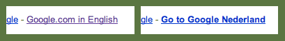
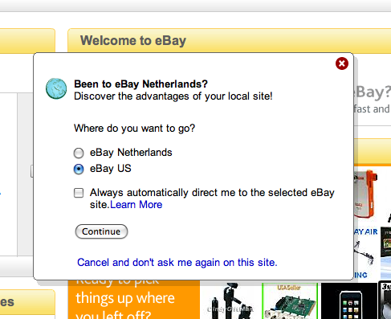

Google's Most Annoying Feature

Google Search is great. When I query it, it is almost always capable of finding something useful among the billions of webpages out there. But it has one ‘feature’ that drives me crazy: it makes decisions for me. Whenever I enter google.com in the address bar of a browser, it decides that I want to go to google.nl. This wouldn’t be so bad if the Dutch version gave me the same results as the English version, but it doesn’t. Not even for a query with English keywords.
Why does Google do this? I have no idea, maybe Google believes that its users are stupid. What other reasons could there be to do something like this to your users? The user is given no feedback at all on that he has been redirected to a different site than the one he chose to go to. Most users will not even notice that this happened, but they do get ‘crippled’ search results.
From Good Through Bad To A Little Better
In the early days of Google, google.com was just google.com. There were no localized versions of the search page and everything was great. Some time after the localized versions started to appear someone decided that it would be great to automagically redirect a user to a search page in his language. When this suddenly happened I was immediately annoyed. I was even more annoyed when there didn’t exist an easy option to disable this behavior. Luckily, after some time a link appeared on the search page labeled ‘Google.com in English’. Finally I could switch back to how I expected to be able to search the internet! But I still have to do this on every computer that I use, in every browser that I use and whenever my cookies are deleted.
So after a really bad period in which I couldn’t even choose to go to the page that I requested the situation has improved. But recently I encountered a new problem: Google Search on the Apple iPhone. I cannot use the built-in Google search bar in Mobile Safari, because it immediately decides that I want to use google.nl. On top of that I can barely use the mobile google.com website because, although it has a link to let me use the English version, it will redirect me to google.nl every single time I open Safari.
Software Should Not Think
Computers are stupid and that is not going to change anytime soon. Therefore a computer is not suitable to make decisions for me. When it does, it is more annoying than helpful. I am a conscious human being and I can make conscious decisions. So if I enter google.com in the address bar it means that I deliberately chose to go to google.com. Likewise, if I want to go to google.nl, I will enter google.nl in the address bar.
It is a good thing to make suggestions to your users if you think they might want to be somewhere else, but it should be nothing more than that: a suggestion. But even making a suggestion has to be implemented carefully, an example of a site that tries to do this is eBay. Their implementation still annoys me, but at least it gives me the opportunity to decide whether I am on the right page or not.

Known Workaround
I really hope that Google will revert this behavior someday. Until that day, the best workaround to the problem described in this article is to move to the United States. When a person in the US browses to google.com he won’t be redirected to a different site, since google.com already is his localized version of the Google search page.